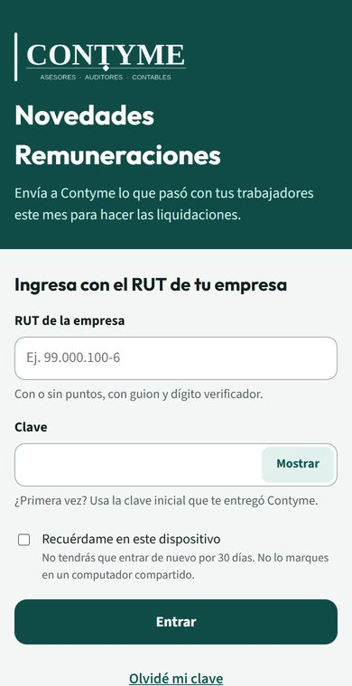
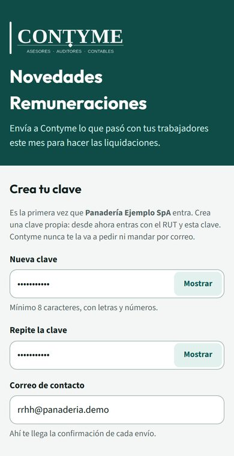
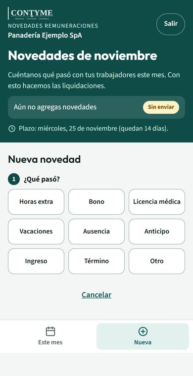
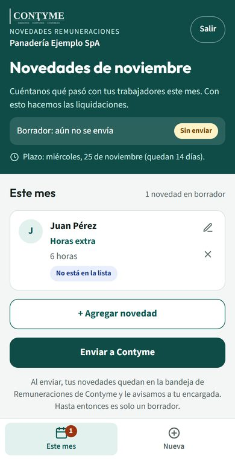
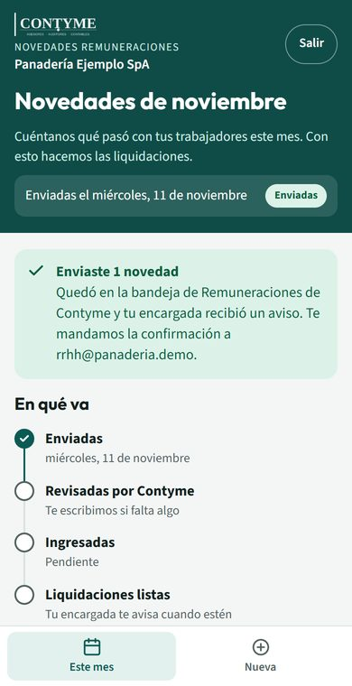

1Entrar la primera vez
Necesitas el RUT de tu empresa y la clave inicial que te entregó tu encargada de remuneraciones en Contyme.
- Abre la app (o escanea el código QR de arriba).
- Escribe el RUT de la empresa, con o sin puntos y con el guion (ej. 76.123.456-7).
- Escribe la clave inicial y toca Entrar.
- La app te pide crear tu propia clave: mínimo 8 caracteres, con letras y números. Escríbela dos veces.
- Agrega un correo de contacto: ahí te llega la confirmación cada vez que envías.
- Toca Guardar y entrar. Desde ahora entras con el RUT y tu clave.


2Instalar en el teléfono
Así queda como una app más, con el ícono de Contyme, y se abre con un toque. No ocupa espacio y se actualiza sola. No está en la App Store ni en Google Play: se instala desde el navegador.
iPhone
- Abre la app en Safari (el navegador azul de la brújula).
- Toca el botón Compartir abajo al centro.
- Baja y toca Agregar a pantalla de inicio.
- Toca Agregar arriba a la derecha.
Si no ves la opción, revisa que estés en Safari y no dentro de WhatsApp o Gmail: toca «Abrir en Safari».
Android
- Abre la app en Chrome.
- Abajo en la pantalla de ingreso toca Instalar la app. Si no aparece, toca el menú ⋮ arriba a la derecha.
- Elige Instalar aplicación (o «Agregar a pantalla principal»).
- Confirma con Instalar.
Computador
- Abre la app en Chrome o Edge.
- En la barra de direcciones, a la derecha, toca el ícono Instalar (una pantalla con una flecha).
- Confirma con Instalar. Queda en el escritorio y en el menú Inicio.
También puedes usarla sin instalar, guardando el link en favoritos.
3Enviar las novedades del mes
Puedes hacerlo de a poco: lo que agregas queda guardado como borrador hasta que lo envías.
- Toca Nueva (abajo) y elige qué pasó: horas extra, bono, licencia médica, vacaciones, ausencia, anticipo, ingreso, término u otro.
- Elige al trabajador, completa los datos y, si tienes, agrega la foto del respaldo (por ejemplo, la licencia médica). Toca Guardar.
- Repite por cada cosa que pasó. En Este mes ves la lista y puedes editar o quitar.
- Cuando esté todo, toca Enviar a Contyme y confirma. Te llega un correo con el resumen y tu encargada recibe el aviso.
- En Este mes ves en qué va: enviadas → revisadas por Contyme → ingresadas → liquidaciones listas.



Dudas frecuentes
Olvidé mi clave
En la pantalla de ingreso toca Olvidé mi clave y escribe el RUT de la empresa. Tu encargada recibe el aviso, la restablece y te avisa; después entras con la clave inicial y creas una nueva.
Me equivoqué en algo que ya envié
Escríbele a tu encargada (o responde el correo de confirmación). Ella reabre tu envío para que lo corrijas y lo vuelvas a enviar.
¿Hasta cuándo puedo enviar?
El plazo del mes aparece arriba en la app («Plazo: …»). Mientras más temprano, mejor: así revisamos todo con tiempo.
¿Tengo que actualizar la app?
No. Se actualiza sola cada vez que la abres con internet. Abajo en la pantalla de ingreso ves el número de versión.
¿Quién ve la información?
Solo tu empresa y el equipo de remuneraciones de Contyme. Los respaldos (como las licencias médicas) quedan en una carpeta privada de Contyme, compartida solo con tu encargada.
¿Necesito ayuda?
Escríbele a tu encargada de remuneraciones en Contyme: con gusto te acompañamos la primera vez.